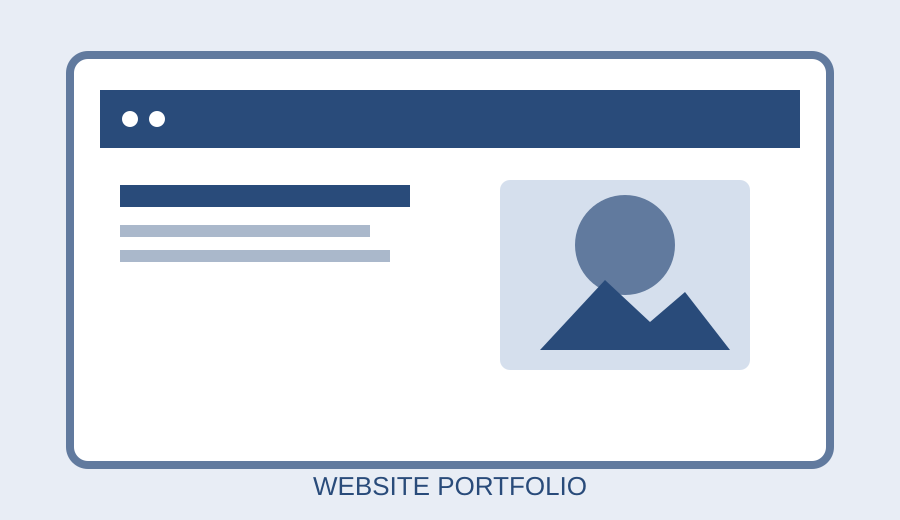
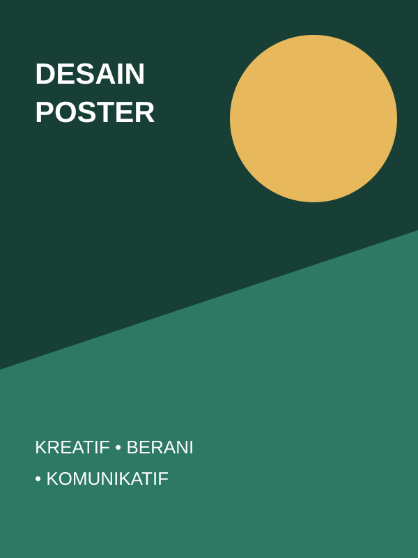
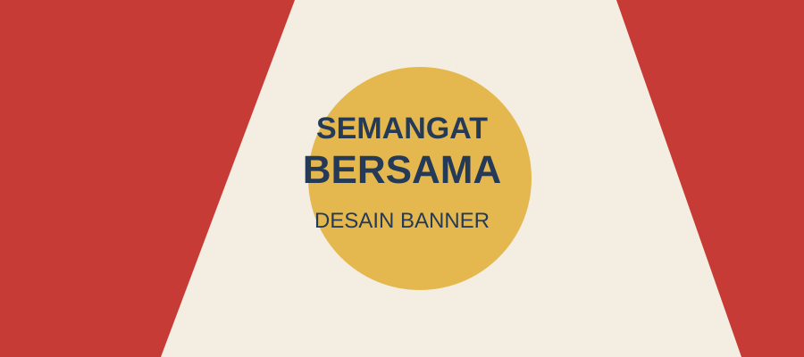

Website Portfolio

Website multip halaman untuk menyajikan profil, skill, proyek, pengalaman, dan kontak.
Mahasiswa Informatika • Web • Desain Grafis
Berikut beberapa karya latihan yang mewakili minat saya di bidang web dan desain. Deskripsi dapat diperbarui sesuai proyek nyata yang pernah dikerjakan.

Website multip halaman untuk menyajikan profil, skill, proyek, pengalaman, dan kontak.

Konsep poster yang mengutamakan pesan utama, kontras, dan keterbacaan.

Banner dengan judul yang menonjol dan komposisi sederhana agar mudah dibaca dari kejauhan.
Lihat halaman detail desain poster sebagai contoh format detail